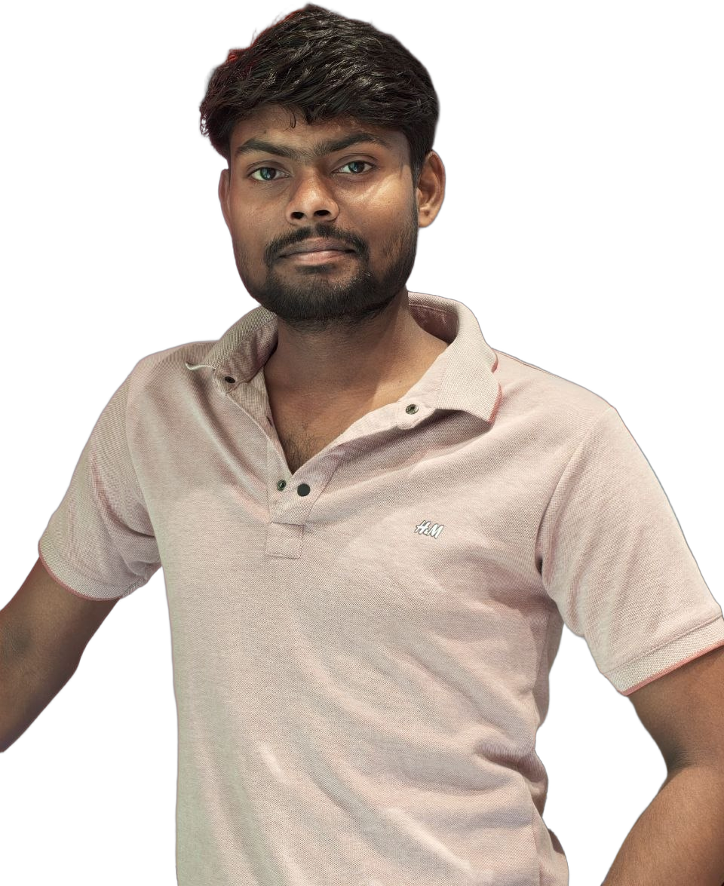
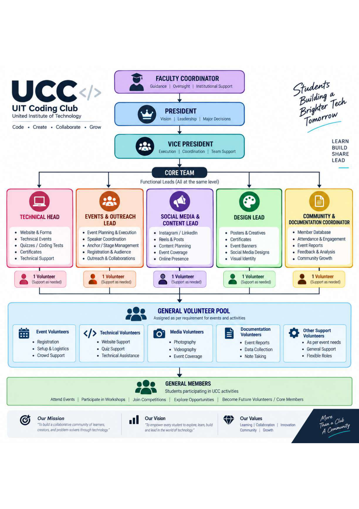
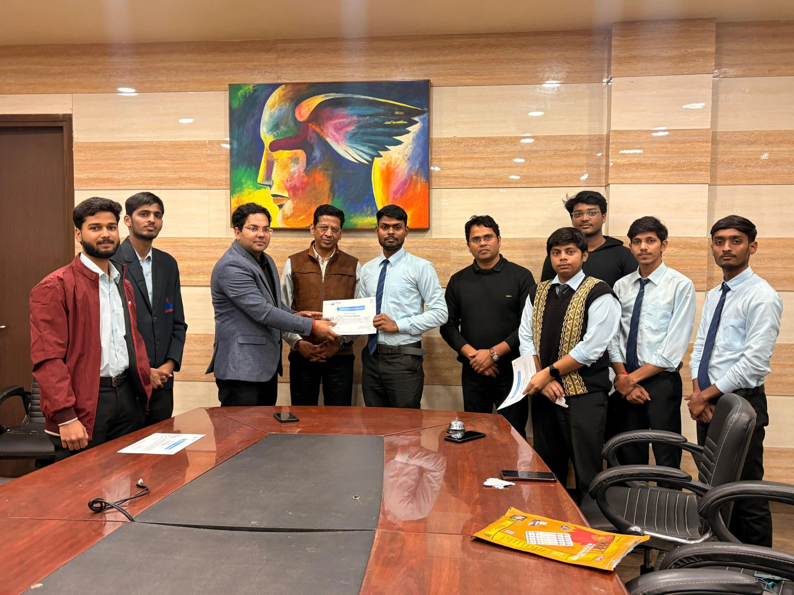
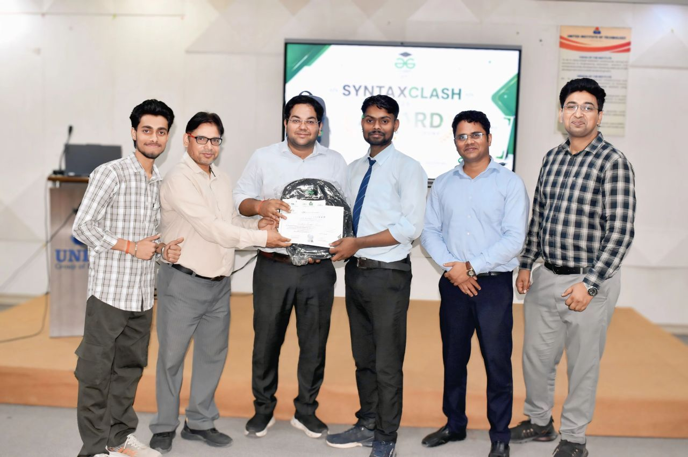
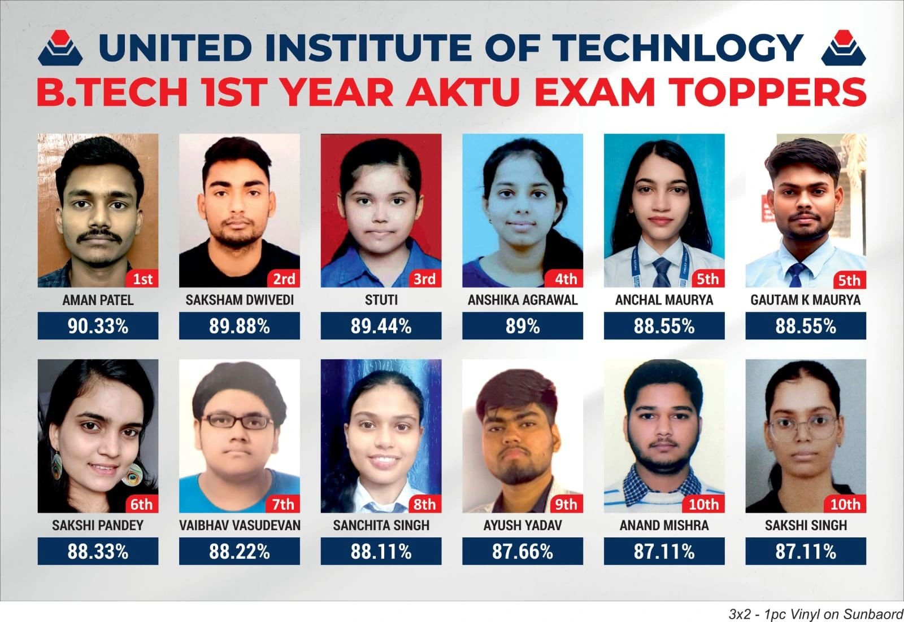
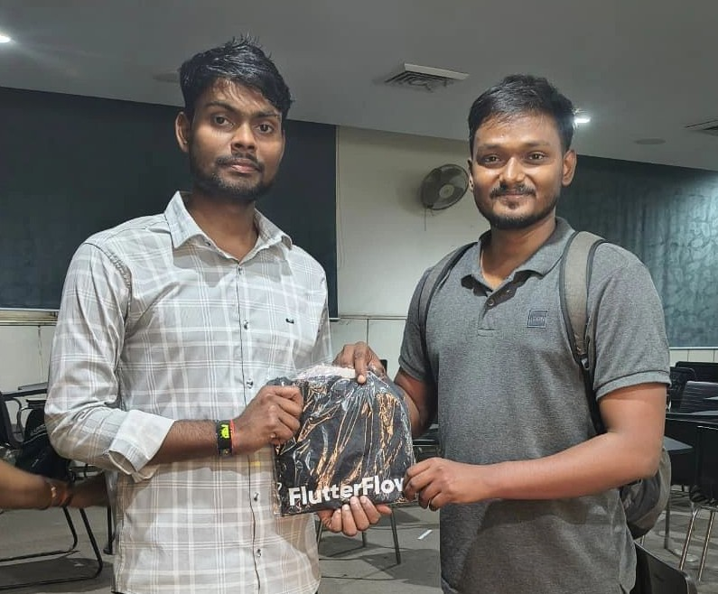
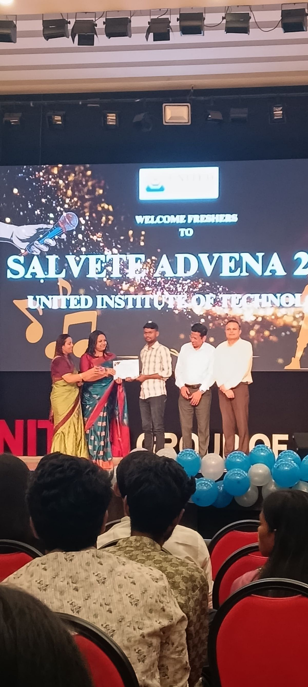
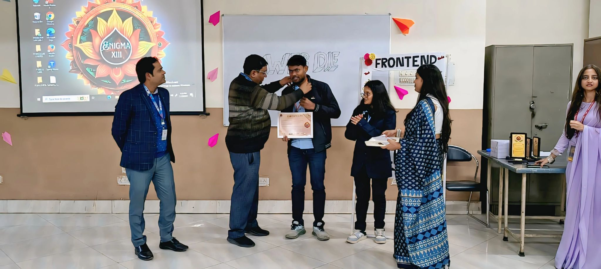
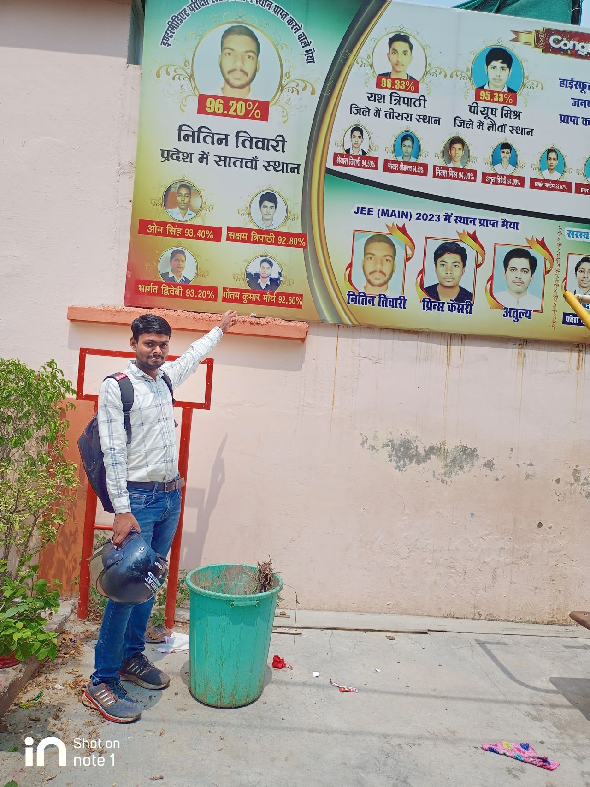
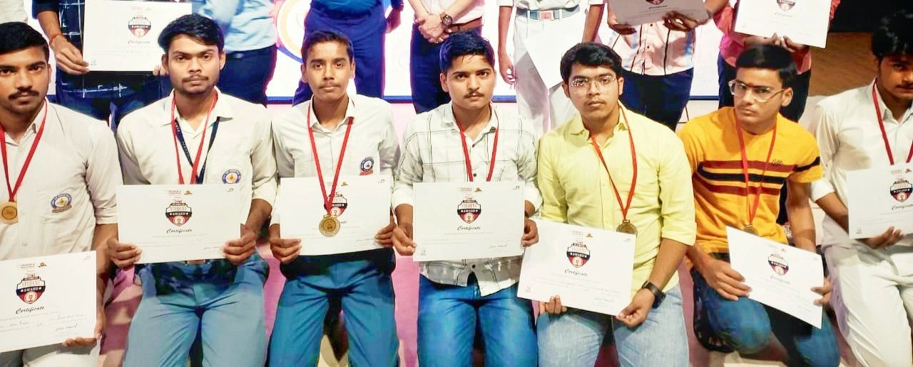

Build. Solve.
Create Impact.
Full Stack Developer & Open Source Contributor
Hi, I'm Gautam Kumar Maurya, a B.Tech CSE (Data Science) student at UIT, Prayagraj. Founding President @ UCC, WikiClub Tech Envoy @ UIT, Vice President @ GFG UIT, Co-Lead @ HackerRank UIT, Open Source Contributor @ Wikimedia, and Cybersecurity Trainee @ C3iHub, IIT Kanpur. I love building practical solutions, contributing to open source, and learning new technologies to create real-world impact.

From Ideas to Real-World Solutions
Practical, high-performance platforms engineered for active users, production scale, and verifiable community impact.
PrayagrajRooms
FeaturedA complete room rental platform with 5,000+ users, secure payments, admin portal, and multi-role dashboards.
Gautam AI Clone
InteractiveAn AI-powered personal assistant trained on my journey, projects, and experiences.
Extended Catalogue
All Production Builds & Research Platforms
VoxRAG
Production-grade, sub-200ms Voice-Enabled Conversational RAG system with multi-turn memory, multi-strategy chunking (48,995 passages), FAISS FlatIP vector search, and real-time grounding verification.
IntervAI
Intelligent real-time technical interview simulator delivering contextual questions, dynamic coding assessments, speech analysis, and actionable hiring diagnostics.
PrayagrajRooms
Verified digital room and accommodation discovery platform built over 10+ months to eliminate brokers for thousands of students and tenants in Prayagraj.
HH-GOA Frame Generator
Official Hacker House Goa 2026 Profile Picture Frame Generator. Fast client-side tool with HEIC support, custom frame overlays, 1080x1080 PNG export & direct X sharing (#FrameInGoa).
VeriTrust
AI-powered social media verification engine analyzing viral claims, detecting synthetic manipulation & bot amplification, and generating automated credibility scores.
NotesBazi (UGI Notes)
High-performance notes management and digital library platform specifically crafted for students of United Group of Institutions (UGI) supporting campuses like UIT.
NHAI Offline Biometrics
Offline biometric face recognition and anti-spoofing liveness detection system engineered for National Highway Authority of India (NHAI) operations.
IIT Bombay Techfest 3D
Interactive 3D web platform engineered for Techfest IIT Bombay featuring real-time WebGL rendering, 3D spatial scenes, interactive controls, and dynamic event portals.
Jarvis OS
Intelligent desktop operating system assistant executing voice automation, natural language system control, shell automation, and context-aware workspace workflows.
BusSetu
Real-time public transit tracking and route navigation platform optimizing daily highway commutes across Prayagraj with live schedule updates.
TripSync
Premium group travel and settlement tracker with greedy flow-minimizer debt reduction algorithm and peer-to-peer consensus approval.
PDFBAZI
Client-side document editor utility allowing users to merge, split, compress, and process PDF files completely offline in the browser without server uploads.
CampusClick
Centralized campus bulletin, event notification, and community portal engineered for student chapters and academic groups across UIT Prayagraj.
BuildX India Portal
Official registration and submission dashboard engineered for BuildX India 2026, handling live participant submissions and team registrations.
Open Source & Upstream Contributions
Serving as WikiClub Tech Envoy at UIT Prayagraj (Wikimedia Movement). Author of 26 upstream patches (13+ merged into production) across MediaWiki Core, TranslationNotifications, UploadWizard, MinervaNeue, GrowthExperiments, and Pywikibot.
WikiClub Tech Envoy
Appointed to lead the campus chapter at UIT Prayagraj, organize technical workshops, and mentor contributors across the global Wikimedia movement.
1st Place Sprint Winner
Secured 1st Place in the 1-Week Open Source Sprint organized by WikiClub Tech UIT for authoring and deploying production MediaWiki patches.
26+ Gerrit Patches (13+ Merged)
Active author in MediaWiki Core, MinervaNeue, GrowthExperiments, Pywikibot, and Wikifunctions. Featured in IIIT Hyderabad's Technical Report.
Honored with Best Contributor & Completion Honors
Officially recognized at the Road to Wiki Programme (Cohort 2) graduation organized by WikiClub Tech India in collaboration with Open Knowledge Initiatives (OKI, IIIT Hyderabad). Gautam earned top honors for shipping production code to Wikimedia MediaWiki Core, mentoring campus contributors, and active upstream code reviews.
Featured Wikimedia Upstream Patches
Peer-reviewed upstream code authored by Gautam Kumar Maurya (@Gkm563), merged into production across MediaWiki Core, extensions, and mobile skins serving 1+ Billion monthly Wikipedia users worldwide.
Rest: Fix cookie expire/expiry key inconsistency in EntryPoint
Standardized mismatched cookie expiration parameter dictionary keys (expire vs expiry) inside MediaWiki Core's REST EntryPoint to prevent silent session cookie dropping during API requests.
CategoriesDetailsWidget: Fix ampersand rendering in category navigation
Resolved double-encoded HTML entity bug where ampersands (&) rendered literally in category labels during multi-file media uploads on Wikimedia Commons.
Prevent database error when notifying no languages
Implemented defensive query checks to prevent SQL execution syntax errors when sending translation alert notifications without any selected target languages.
Rest: Avoid repeating HTTP verb in autogenerated operation IDs
Cleaned up the OpenAPI REST specification generator to eliminate redundant duplicated HTTP action prefixes (get_get_...) in generated client SDK methods.
Update Magahi (mag) namespace translations
Contributed updated localized canonical namespace aliases for the Magahi language edition of MediaWiki, enabling proper localized routing and search for regional Indic readers.
[doc] Add Gkm563 to AUTHORS.rst & Parser Regression Suite
Formally recognized as an upstream framework author in Pywikibot Core after authoring regression tests verifying HTML comments in <references /> parser blocks.
Handle malformed URI fragments in TitleUtil
Added defensive try-catch error boundary around URI fragment decoding in MinervaNeue's TitleUtil to prevent client-side JavaScript crashes when mobile Wikipedia readers tap malformed red-links.
Gender support in mentored exception message
Resolved internationalization accessibility gaps inside the newcomer mentorship flow by implementing proper grammatical gender parameters across localized notification strings.
No matching patches found
Try another keyword, Gerrit ID, or reset the active filter tag.
Engineered for Performance, Driven by Impact.
Full-Stack & Systems
Co-Founder @ PrayagrajRooms (5k+ Users) & BuildX Platform. React, Node, TypeScript, SQL.
Applied AI & ML
VoxRAG (sub-200ms Voice RAG), IntervAI, AIT Bangkok GIIP Research Fellow (Thailand).
Cyber & Forensics
UP Police APCSIP Best Content Creator Awardee & C3iHub IIT Kanpur Trainee. OSINT & Threat Analysis.
Open Source & Merit
15+ Merged MediaWiki Patches, VP @ GeeksforGeeks UIT Chapter & Academic Rank 1 (SGPA 8.5).
I am Gautam Kumar Maurya (gkm563) — a Full-Stack Software Engineer, AI Developer, and Cybersecurity Researcher. Currently pursuing B.Tech in CSE (Data Science) at United Institute of Technology (UIT), Prayagraj, I hold Academic Rank 1 in CSE (Data Science) for 2nd Year (SGPA 8.5) and Rank 5 College Overall for 1st Year in AKTU examinations with top academic honors.
As WikiClub Tech Envoy at UIT and Vice President of the GeeksforGeeks UIT Chapter, I bridge academic excellence with production software engineering and open-source leadership. I co-founded PrayagrajRooms (a student platform serving 5,000+ users), contribute actively to Wikimedia MediaWiki Core (15+ merged production patches, featured in IIIT Hyderabad's Open Source Report), and mentor emerging engineers.
My credentials include representing India as an international GIIP-2026 Research Fellow at AIT Bangkok, Thailand, being selected among 800+ global applicants for the Youths Innovate AI Mentorship Program (Fall Cohort 2026), and completing the government cybersecurity fellowship with UP Police & Amroha Police Cyber Crime Cell (APCSIP-2026), where I was honored with the Best Content Creator Award by DSP Anjali Kataria.
Academic Rank 1
Rank 1 CSE DS 2nd Year (SGPA 8.5), Rank 5 College 1st Year.
GIIP Scholar
International Research Scholar at AIT Bangkok, Thailand.
UP Police Awardee
Best Content Creator Award by DSP Anjali Kataria (APCSIP-2026).
CDN Founder
Founder & Organizer of Coding & Development Network UIT.
Engineering Skills & Tech Stack
Frontend Web
Backend & APIs
AI & Data Science
Cyber & Open Source
Internships & Global Research
Youths Innovate AI
Selected among 800+ global applicants for an international online mentorship experience in AI, ML innovation, and real-world system impact.
AIT Bangkok, Thailand
15-day Global Innovation Internship Program at Asian Institute of Technology. Researched Agentic AI, Ubiquitous GIS, and drone telemetry.
Amroha & UP Police
15-day government Cyber Security Internship. Awarded Best Content Creator by DSP Anjali Kataria Ma'am for digital forensics.
WikiClub Tech @ UIT
Appointed WikiClub Tech Envoy to lead the campus chapter at UIT, organize open source hackathons, and mentor contributors on MediaWiki Core.
Leadership & Community Roles
UIT Coding Club (UCC)
Co-founded UCC with Dr. Dhananjay Sharma, established the 17-member leadership charter, and organized algorithmic coding competitions for 2nd and 3rd year engineering students.
WikiClub Tech Envoy
Appointed Envoy leading campus chapter, directing upstream Gerrit hackathons, authoring 26+ patches, and mentoring emerging contributors.
GFG Student Chapter
Curated orientation drives, SyntaxClash mega contest with merchandise swags, offline mentorship sessions, and Gateway to GATE keynote with GFG VP (AIR 12 & 32) hosting 600+ students.
HackerRank UIT
Directing algorithmic test series, mentoring DSA problem solving, and co-convened the Gateway to GATE mega conclave with GFG Noida VP hosting 600+ students.
Events & Hackathons Organised
Proven track record orchestrating 600+ student auditorium keynotes, competitive programming hackathons, and developer bootcamps with industry leaders and verified stage felicitations.
"As a Tech Community Leader and Founding President of UIT Coding Club (UCC, founded with Dr. Dhananjay Sharma), I have actively mobilized 4,200+ student developers across 17+ hackathons and algorithmic contests."
From single-handedly spearheading the Smart India Hackathon (SIH) Internal Conclave (77 teams, 462 students, 8 panels) — the largest in college history — to founding UCC with Dr. Dhananjay Sharma, 600+ keynotes with GeeksforGeeks Vice President (AIR 12 & 32 ex-ISRO), and Vibe Coding with Google Gemini — explore my complete event dossier.

150+ Contestants Founding PresidentUCC Coding Challenge (2nd & 3rd Yr)
Founded UCC with Dr. Dhananjay Sharma. Designed the 17-member leadership charter and organized an intensive offline coding competition for 2nd and 3rd year engineering students.
Gateway to GATE: Mega Auditorium Keynote
Organized mega auditorium session inviting GeeksforGeeks Vice President from Noida HQ (AIR 12 & 32, ex-ISRO). 600+ students packed the hall for GATE strategy and roadmap.

600+ Attendees Vibe CodingVibe Coding with Google Gemini
Conducted live session educating 600+ engineering students on Vibe Coding, AI-augmented workflows, and the Google Gemini API directly on the main auditorium stage.

Bags & Swags Syntax ClashSyntax Clash & GFG Contest Series
Organized flagship hackathon distributing official GeeksforGeeks backpacks, branded pens, stickers, and merit certificates. Spearheaded 4 algorithmic sprint series.
Honors, Awards & Achievements
Best Content Creator Award
Awarded by DSP Anjali Kataria Ma'am during UP Police Cyber Security Program (APCSIP-2026).
1st Place WebDie Winner
Secured 1st Place in the WebDie Web Development event at United Group's annual techno-cultural fest, Enigma XIII.
Rank 1 CSE (Data Science) & College Rank 5
Secured Rank 1 in CSE (Data Science) 2nd Year with an SGPA of 8.5, and Rank 5 college-wide in 1st Year AKTU exams.
GIIP International Scholar 2026
Selected for 15-day research fellowship at Asian Institute of Technology (AIT Bangkok, Thailand).
65/70 Cyber Security Score
Scored an exceptional 65 out of 70 in Cyber Security in Dr. A.P.J. Abdul Kalam Technical University (AKTU) exams.
1st Place — 1-Week Open Source Marathon
Secured 1st rank in the 1-Week Open Source Marathon organized by WikiClub Tech UIT for production Wikimedia / MediaWiki code contributions.
BuildX India Tech Lead
Technical team lead and developer for BuildX India 2026 Hackathon portal managing 500+ participants.
Govt Startup Collaborator
Engineered digital optimization and catalog portal for Vindhya Millets agricultural startup.
CyberSuraksha Scholar (IIT-K)
Shortlisted for the CyberSuraksha Cybersecurity training organized by C3iHub, IIT Kanpur and realme India.
LPAI National Internship Shortlist
Shortlisted for Land Ports Authority of India (LPAI) 2026 Internship Program exploring border logistics & smart data systems.
SIH 2026 Lead Organizer (500+ Coders)
Spearheaded 15-day execution of Smart India Hackathon 2026 Internal Hackathon at UIT managing 76 teams and 8 judging panels.
EduWiki Hub Global Mentee
Selected as India representative in Cohort 2 of EduWiki Hub Mentorship Program under Wikipedia & Education User Group.
Technical Focus & Architecture
AI Engineering & Agents
Developing LLM workflows, autonomous agent pipelines, prompt chaining, and intelligent automation systems.
Full-Stack Architecture
Building performant, responsive web applications with React, Node.js, Python backends, and modern CSS frameworks.
OSINT & Cyber Audits
Conducting digital footprint reconnaissance, penetration testing, threat analysis, and secure code reviews.
Open Source Engineering
Contributing patches to MediaWiki Core, MinervaNeue, Pywikibot, and collaborating through Gerrit code review.
Data Science & ML
Statistical data analysis, machine learning model fitting, predictive pipelines, and Pandas/NumPy workflows.
Cloud & Automation
Serverless deployments, continuous integration pipelines, database management, and API orchestration.
Professional Journey Gallery
A visual timeline highlighting key milestones from academic, professional, open-source, and international experiences.

Best Contributor Award — Road to Wiki Graduation 2026
Honored with the prestigious Best Contributor Award & memento for outstanding technical contributions, upstream MediaWiki code merges, and leadership during the Road to Wiki Programme organized with Open Knowledge Initiatives (OKI, IIIT Hyderabad).

Global Innovation Internship
Participating in the Global Innovation Internship Program at the Asian Institute of Technology (AIT), Bangkok, Thailand.

1-Week Open Source Marathon Winner
Secured 1st Place in the 1-Week Open Source Contribution Marathon organized by WikiClub Tech UIT for authoring and merging production Wikimedia patches.
Best Content Creator Award
Recognized for excellence in technical content creation and community contributions.

AKTU Branch Topper
Recognized as the Branch Topper in Computer Science & Engineering (Data Science) under Dr. A.P.J. Abdul Kalam Technical University (AKTU).

FlutterFlow Developers Group
Participating in developer meetups, workshops, and community collaboration.

Most Active Contributor Award — Road to Wiki Graduation 2026
Felicitated on stage with the framed recognition certificate for highest sustained commit activity, code reviews, and community enablement across the Road to Wiki Cohort 2 graduation ceremony.

UIT Academic Excellence
Ranked among the Top 5 students at United Institute of Technology, Prayagraj.
GeeksforGeeks Student Chapter – UIT
Recognition for leadership and contributions to the GeeksforGeeks Student Chapter.
Google Student Ambassador Leadership
Co-organized a mega 650+ attendee tech event as GSA; honored & awarded on stage by Principal Sir, DSW, and all Department HODs.

Webdie Hackathon Champion
Secured 1st Place in the Webdie Full Stack Development Hackathon.
MNIT Academic Topper Honor
Honored by MNIT Professor for securing 1st Rank (School Academic Topper) & maintaining 100% Attendance.

School Academic Journey
Academic achievements, competitions, and leadership during school education.

UP Board District Topper Award
Honored by the Chairman, Director & Secretary (सचिव - माध्यमिक शिक्षा परिषद्) of UP Board for academic excellence as a District Topper.
What I Am Focused On Right Now
Academics & Merit
3rd Year B.Tech CSE (Data Science) @ UIT Prayagraj. Sustaining Academic Rank 1 (SGPA 8.5) and mastering advanced statistics & ML systems.
Systems & AI Builds
Scaling PrayagrajRooms (serving 5,000+ users), refining sub-200ms Voice RAG in VoxRAG, and engineering autonomous AI workflows.
WikiClub & GFG
Appointed WikiClub Tech Envoy @ UIT (Wikimedia Movement) to lead campus open source; directing technical sprints as VP @ GFG UIT.
Global AI & Cyber
Selected Mentee at Youths Innovate AI (Fall 2026); advancing research post-AIT Bangkok GIIP in agentic telemetry & digital forensics.
Engineering Deep Dives & Field Reports
Comprehensive writeups, technical architecture reviews, and verified documentation from international and government research programs.
Wikimedia Core Impact Report
15+ production patches merged across MediaWiki Core, MinervaNeue, and Pywikibot. Documented in the IIIT Hyderabad Technical Impact Report.
AIT Bangkok 15-Day Research Log
Complete day-by-day technical timeline covering Agentic AI, QGIS telemetry, drone mapping, and BusSetu public transit analytics in Thailand.
UP Police APCSIP-2026 Brief
Digital forensics, OSINT investigations, and threat intelligence under DSP Anjali Kataria Ma'am with the Best Content Creator Award citation.
B.Tech Academic & Tech Journey
Interactive semester-by-semester breakdown from 1st Year to 4th Year, AKTU exams, leadership milestones, and tech blog logs.
40+ Certifications & Badges
Publicly verifiable licenses from Anthropic, C3iHub IIT Kanpur, Microsoft, IBM, Google Cloud, and Infosys Springboard.
Honors, Medals & Felicitations
High-resolution stage photos, academic branch topper honors, UP Board felicitations, and hackathon 1st place trophies.
Frequently Asked Questions
Quick answers for recruiters, engineering managers, and technical collaborators.
Let's Connect & Build Together
Have an exciting project, startup idea, or technical role? Feel free to reach out directly via email, WhatsApp, or through the contact form.